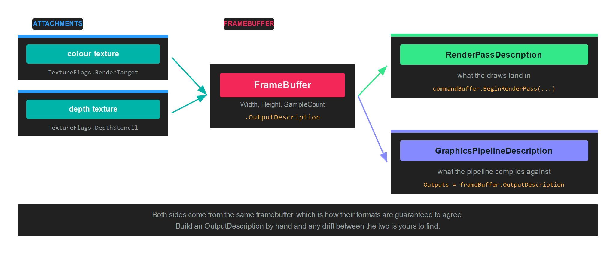

Framebuffer
A FrameBuffer is the set of textures a render pass draws into: one or more colour attachments and, usually, a depth attachment. It says where the output goes, and its OutputDescription says what format that output is in.
Every application already has one without creating it. swapChain.FrameBuffer is the framebuffer whose contents reach the screen. You create your own when drawing somewhere else: a shadow map, a G-buffer, an offscreen target you will sample later.
Why it appears in two places

A framebuffer is named by the render pass that draws into it, and its OutputDescription is named by the pipeline that draws. Both have to agree on formats, sample count and attachment count, which is why you take the pipeline's Outputs from the framebuffer rather than describing it separately.
Creation
Create the textures first. A colour attachment needs TextureFlags.RenderTarget, plus ShaderResource if you intend to sample it afterwards. A depth attachment needs TextureFlags.DepthStencil:
var colorTargetDescription = new TextureDescription()
{
Format = PixelFormat.R8G8B8A8_UNorm,
Width = rtSize,
Height = rtSize,
Depth = 1,
Layers = 1,
Flags = TextureFlags.RenderTarget | TextureFlags.ShaderResource,
CpuAccess = ResourceCpuAccess.None,
MipLevels = 1,
Type = TextureType.Texture2D,
Usage = ResourceUsage.Default,
SampleCount = TextureSampleCount.None,
};
var colorTarget = this.graphicsContext.Factory.CreateTexture(ref colorTargetDescription);
var depthTargetDescription = colorTargetDescription;
depthTargetDescription.Format = PixelFormat.D24_UNorm_S8_UInt;
depthTargetDescription.Flags = TextureFlags.DepthStencil;
var depthTarget = this.graphicsContext.Factory.CreateTexture(ref depthTargetDescription);
// Wrap each texture in an attachment, then build the framebuffer...
var depthAttachment = new FrameBufferAttachment(depthTarget, 0, 1);
var colorAttachments = new[] { new FrameBufferAttachment(colorTarget, 0, 1) };
this.frameBuffer = this.graphicsContext.Factory.CreateFrameBuffer(depthAttachment, colorAttachments);
See Texture for the full set of description properties.
FrameBufferAttachment
An attachment is a texture plus the slice of it being drawn into:
new FrameBufferAttachment(texture, arraySlice, sliceCount);
arraySlice and sliceCount select part of a texture array or a cubemap. Pass 0, 1 for an ordinary 2D texture. Rendering into all six faces of a cubemap in one pass, for instance, uses 0, 6.
FrameBuffer members
| Member | Type | Description |
|---|---|---|
| ColorTargets | FrameBufferAttachment[] |
The colour attachments, in the order the pixel shader writes them. |
| DepthStencilTarget | FrameBufferAttachment? |
The depth attachment, or null for a colour only pass. |
| OutputDescription | OutputDescription |
The formats and sample count, for a pipeline to compile against. |
| Width, Height | uint |
Dimensions, taken from the attachments. |
| ArraySize | uint |
Number of array slices rendered at once. 1 by default. |
| SampleCount | TextureSampleCount |
Multisample count shared by every attachment. |
| RequireFlipProjection | bool |
Whether the backend needs the projection flipped vertically when drawing into this target. |
| BelongsToSwapChain | bool |
true for the framebuffer a swapchain owns. |
| Name | string |
Debug name, shown in graphics debugging tools. |
Important
Every attachment has to share the same width, height and sample count. Multiple render targets also need the backend to support them, which graphicsContext.Capabilities.IsMRTSupported reports.
OutputDescription
| Property | Type | Description |
|---|---|---|
| ColorAttachments | OutputAttachmentDescription[] |
One entry per colour attachment, carrying its format. |
| DepthAttachment | OutputAttachmentDescription? |
The depth format, or null. |
| SampleCount | TextureSampleCount |
Samples per attachment. |
| ArraySliceCount | uint |
Number of views rendered. |
| CachedHashCode | int |
Precomputed hash, so pipeline compatibility checks are cheap. |
Drawing into it
Build the pipeline against the framebuffer's output description:
var pipelineDescription = new GraphicsPipelineDescription()
{
PrimitiveTopology = PrimitiveTopology.TriangleList,
InputLayouts = triangleVertexLayouts,
ResourceLayouts = new[] { triangleResourceLayout },
Shaders = new GraphicsShaderStateDescription()
{
VertexShader = triangleVertexShader,
PixelShader = trianglePixelShader,
},
RenderStates = new RenderStateDescription()
{
RasterizerState = RasterizerStates.None,
BlendState = BlendStates.Opaque,
DepthStencilState = DepthStencilStates.None,
},
Outputs = this.frameBuffer.OutputDescription,
};
this.trianglePipelineState = this.graphicsContext.Factory.CreateGraphicsPipeline(ref pipelineDescription);
Then open a render pass on it:
var commandBuffer = this.commandQueue.CommandBuffer();
commandBuffer.Begin();
RenderPassDescription renderPassDescription = new RenderPassDescription(this.frameBuffer, new ClearValue(ClearFlags.Target, Color.CornflowerBlue));
commandBuffer.BeginRenderPass(ref renderPassDescription);
commandBuffer.SetViewports(this.rTViewports);
commandBuffer.SetScissorRectangles(this.scissors);
commandBuffer.SetGraphicsPipelineState(this.trianglePipelineState);
commandBuffer.SetResourceSet(this.triangleResourceSet);
commandBuffer.SetVertexBuffers(this.triangleVertexBuffers);
commandBuffer.Draw((uint)this.triangleVertexData.Length);
commandBuffer.EndRenderPass();
commandBuffer.End();
commandBuffer.Commit();
this.commandQueue.Submit();
this.commandQueue.WaitIdle();
Note
The viewport is not part of the framebuffer or of the pipeline, so it has to be set inside every pass. Drawing into a 512 by 512 target with a viewport still sized for the window renders into the corner of it.
Sampling the result
To read a render target afterwards, transition it out of RenderTarget and into a shader resource state, outside the render pass:
commandBuffer.EndRenderPass();
commandBuffer.Barrier(new Texture.Barrier(colorTarget, Texture.StateFlags.PixelShaderResource));
The texture also needs TextureFlags.ShaderResource at creation, and a slot declared as ResourceType.TextureView in the ResourceLayout of whatever samples it. See Barriers.
Cleaning up
A framebuffer does not own its attachments, so disposing it leaves the textures alive:
frameBuffer.Dispose();
colorTarget.Dispose();
depthTarget.Dispose();